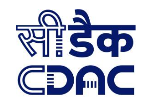

C-DAC
Centre for Development of Advanced Computing
SARTHI
A Tool for
S
imulation
A
nalysis of
R
outing,
T
raffic and
H
ardware
I
nterconnects
Continue →
← Back
Table of Contents
NoC Simulator · click any subtopic to jump straight there
↻
RECAP
→
Roadmap & CHI Nodes
6-Port Router
Ports by Router Position
System Architecture
Flit & Pipeline Summary
📊
QUARTERLY PROGRESS REPORT
Progress from August to October 2026, the key achievements, and the next milestones.
→
⬡
Hardware Architecture & Router Design
The complete and simplified link handshakes compared, CHI handshake, updated CHI router, router pipeline, and CHI flit channels.
→
Link Handshake Comparison
CHI Handshake
Router Architecture & Pipeline
CHI Flit Channels
⬡
Software Development Progress
How much of the hardware is simulated, system architecture, API server, simulation run flow, and backend module status.
→
Simulation Coverage
System Architecture
API & Drogon Server
Simulation Run Flow
Backend Module Status
✓
Testing & Verification
Our testing plan, GoogleTest in the project, the tools we run today and plan to add, and our CI/CD pipeline.
→
Testing Plan
GoogleTest
Tools & Next Steps
CI/CD Pipeline
⊞
Summary and Documentation
Where the internal mesh stands, the RN-F, SN-F and HN-F architecture flow documents, the architecture document status, and how our documentation is kept.
→
Mesh & Node Status
Specification Documents
Design Documents
⏱
Project Timeline
→
Archives
Previous meeting · not part of this presentation
Recap (July 2026)
Quarterly Progress Report (April – July 2026)
Hardware Architecture & Router Design (July 2026)
Software Development Progress (July 2026)
Verification & Validation (July 2026)
Software Development Lifecycle (July 2026)
PCIe & RN-I Bridge (July 2026)
Project Timeline (July 2026)
⬅ Back
Start Presentation →